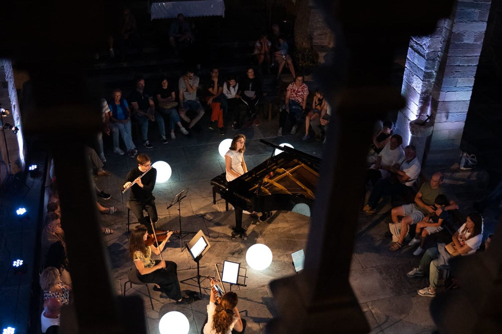

Festival ADAR
ADAR es una asociación cultural fundada en Leiguarda, en el concejo asturiano de Belmonte de Miranda, que produce música y arte contemporáneo en aldeas, iglesias, hórreos, monasterios y paisajes del medio rural. No es un festival que ocurra en una sala y podría ocurrir en otra: cada concierto se piensa para el sitio donde va a sonar.
El programa combina conciertos, encuentros y conferencias con residencias de artistas, encargos a compositores y proyectos site-specific de creadores multidisciplinares que trabajan el territorio como material.
Detrás hay un motivo que no es sólo musical: en muchos de estos pueblos ya no queda casi nada abierto, y un concierto es una razón para que la gente vuelva a juntarse en un sitio que se estaba quedando vacío.
Adar, un festival distinto para revitalizar el mundo rural.
El Comercio · Pablo Antón Marín Estrada, 2024
Hemeroteca
Cobertura del Festival ADAR en medios locales, regionales y nacionales desde 2021, de más reciente a más antiguo.
- La Nueva España · 20/05/2025
El Festival Adar busca los mejores hórreos para música de cámara
- La Nueva España · 12/08/2024
El Festival Adar despliega desde Belmonte otra edición de arte y música en entornos rurales
- Nortes · 11/08/2024
ADAR: Un festival para disfrutar del patrimonio asturiano
- Ayuntamiento de Llanes · 08/08/2024
El Festival ADAR comenzará en Llanes con un concierto en el Monasterio de San Antolín
- El Comercio · Pablo Antón Marín Estrada · 07/08/2024
Adar, un festival distinto para revitalizar el mundo rural
- La Voz del Trubia · 01/08/2024
Paseos sonoros y conciertos en Grado, Salas, Somiedo y Belmonte
- El Comercio · 10/08/2023
Un ‘paseo sonoro’ por La Caridad para acercar la música y el arte al pueblo
- El Comercio · Miguel Rojo · 10/08/2023
Paseos por la naturaleza en busca del arte y la música clásica
- RTPA · Radiotelevisión del Principado de Asturias · 09/08/2023
‘Paseos sonoros’ lleva música clásica a El Franco y después visitará Grado, Colunga y Belmonte de Miranda
- RNE · El Ojo Crítico · 08/08/2023
El Festival Adar con Josefina Urraca
- La Voz del Trubia · 28/07/2023
El Festival ADAR se amplía desde Belmonte a Grado, Colunga y El Franco
- La Nueva España · 30/07/2022
Josefina y Guillermo: un día tocan en Nueva York y otro en una panera de Leiguarda
- Compromiso Caja Rural de Asturias · 01/09/2021
Festival de Música Clásica de Leiguarda
- RTPA · Radiotelevisión del Principado de Asturias · 09/08/2021
I Festival de Música Clásica de Lleiguarda
- La Voz del Trubia · 05/08/2021
El festival de Música Clásica de Leiguarda agota entradas el día de su presentación